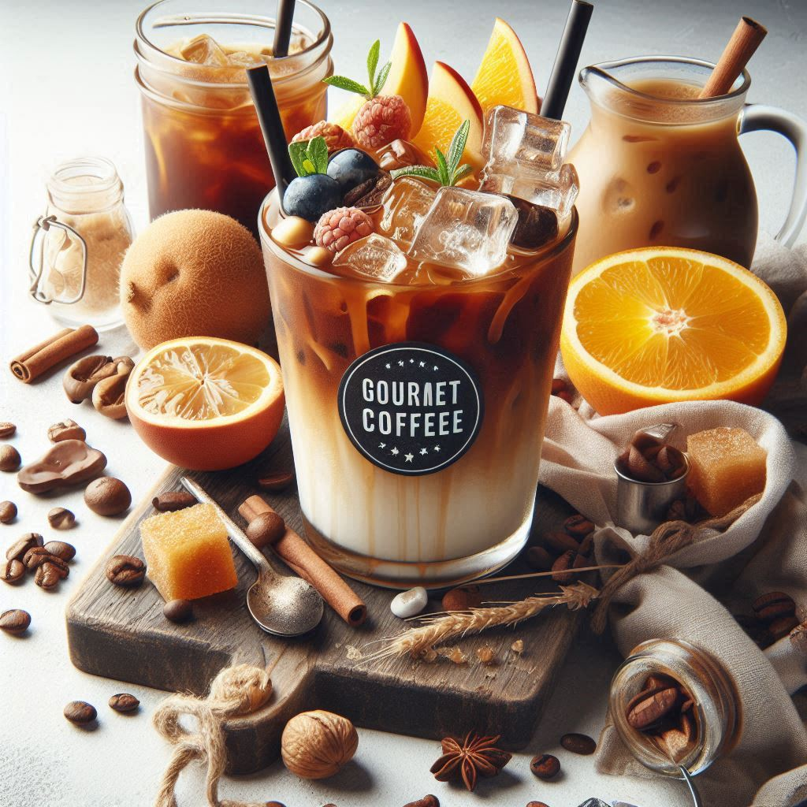
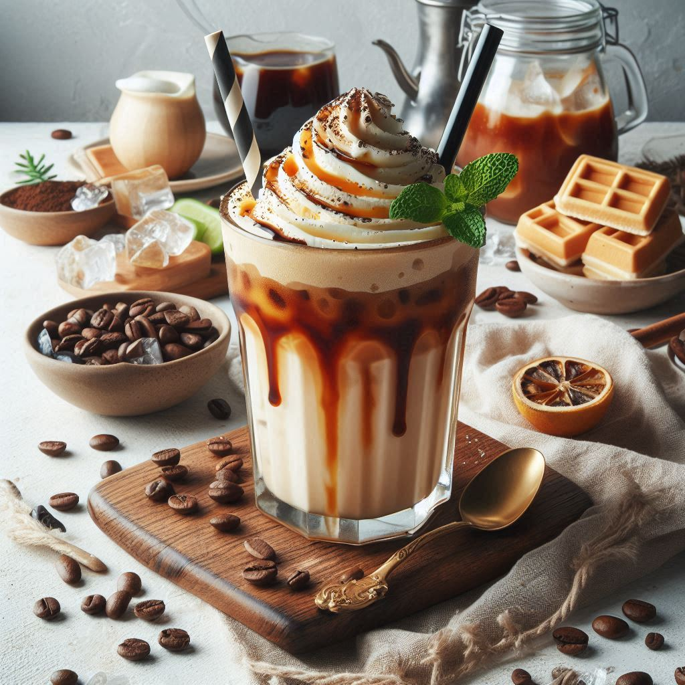
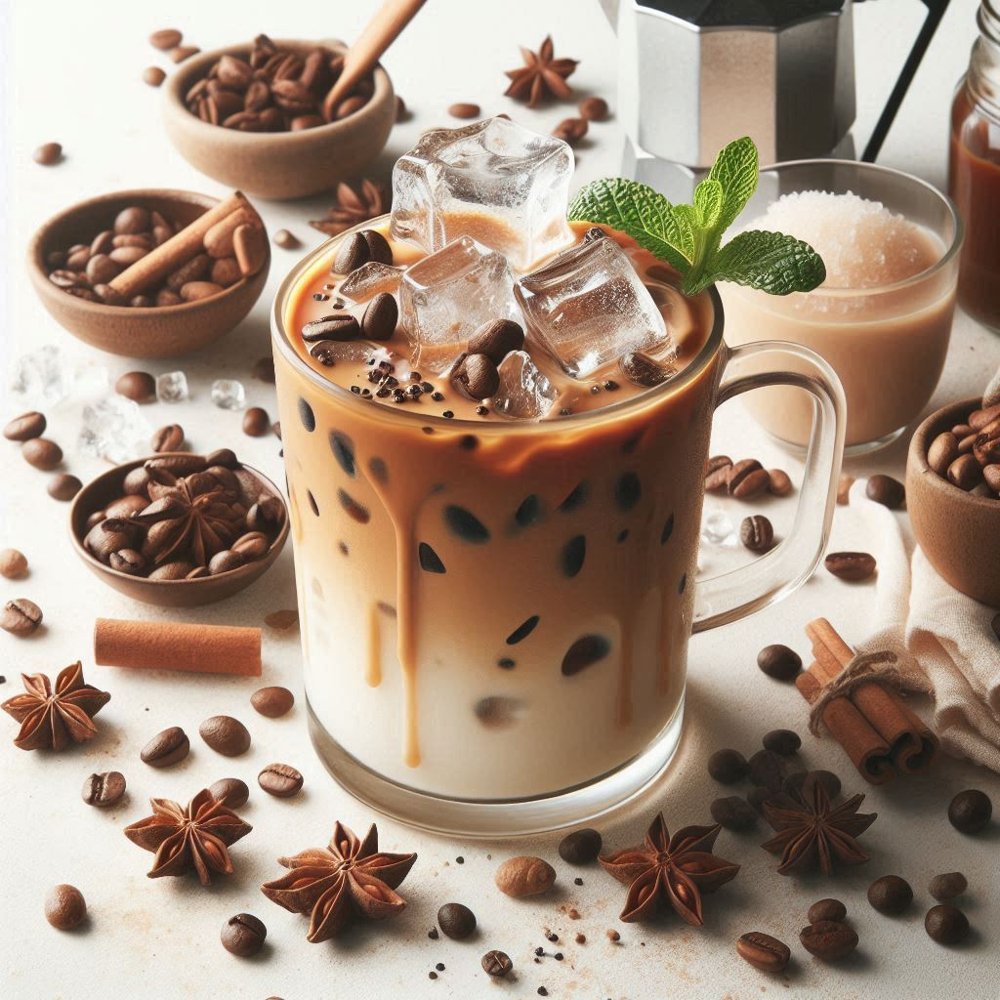
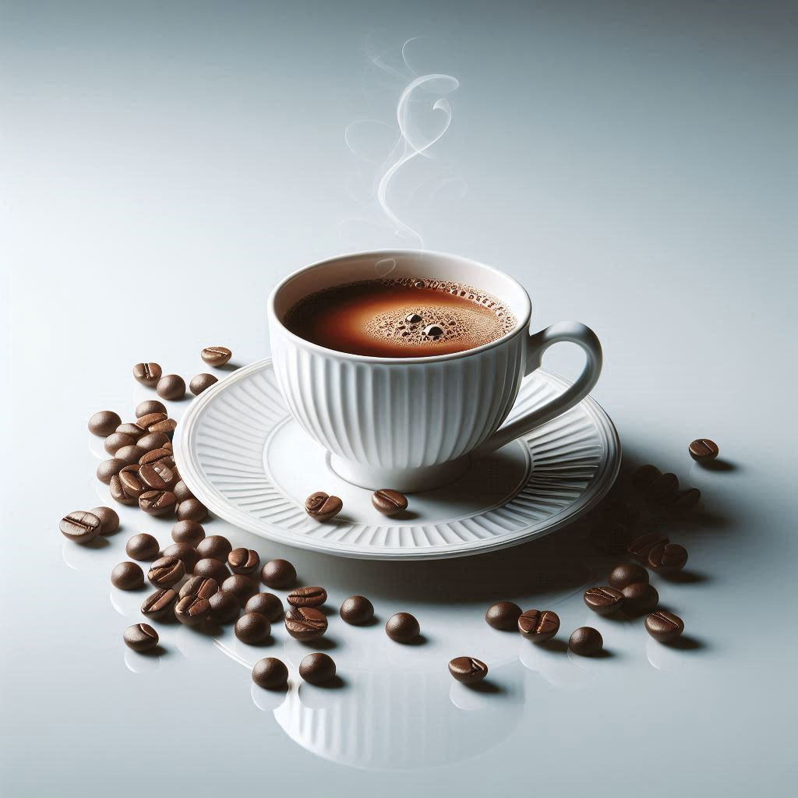
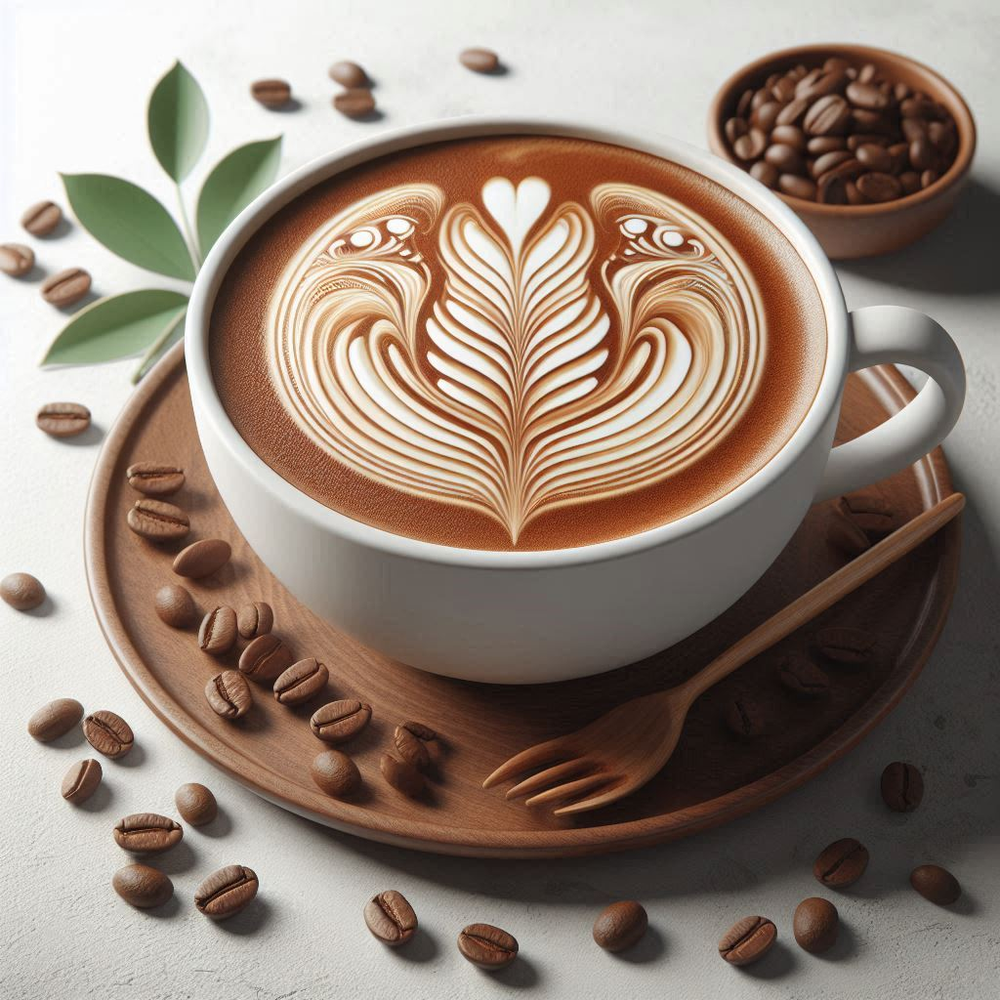

Café Gelado Clássico
Uma deliciosa combinação de café expresso, gelo triturado e um toque de leite. Refrescante e energizante, ideal para os dias quentes.

Café Gelado de Caramelo
Com uma base de café expresso, gelo e uma generosa calda de caramelo, esse café gelado oferece um sabor doce e suave, perfeito para quem adora um toque de doçura.

Café Gelado de Baunilha e Chocolate
Uma mistura perfeita entre café expresso, gelo, leite cremoso, e o irresistível sabor de baunilha e chocolate. Uma verdadeira indulgência para os amantes de sabores intensos.

Espresso Forte
Para os apreciadores de um café mais intenso, nosso Espresso Forte é preparado com café 100% arábica, proporcionando uma experiência de sabor marcante e encorpado.

Cappuccino Cremoso
O clássico cappuccino, com uma mistura de café expresso, leite vaporizado e espuma de leite, oferecendo uma experiência suave e cremosa para começar bem o dia.
